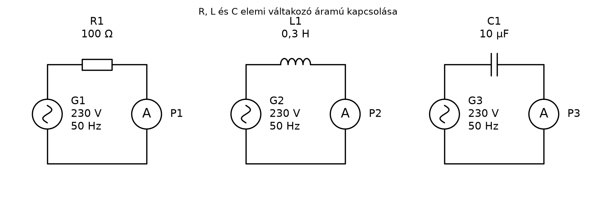
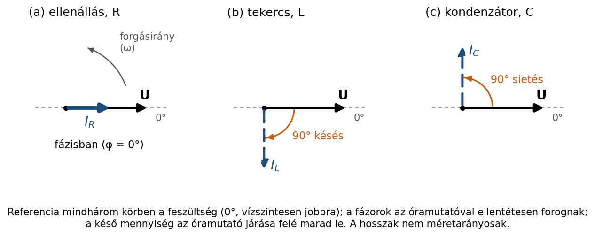
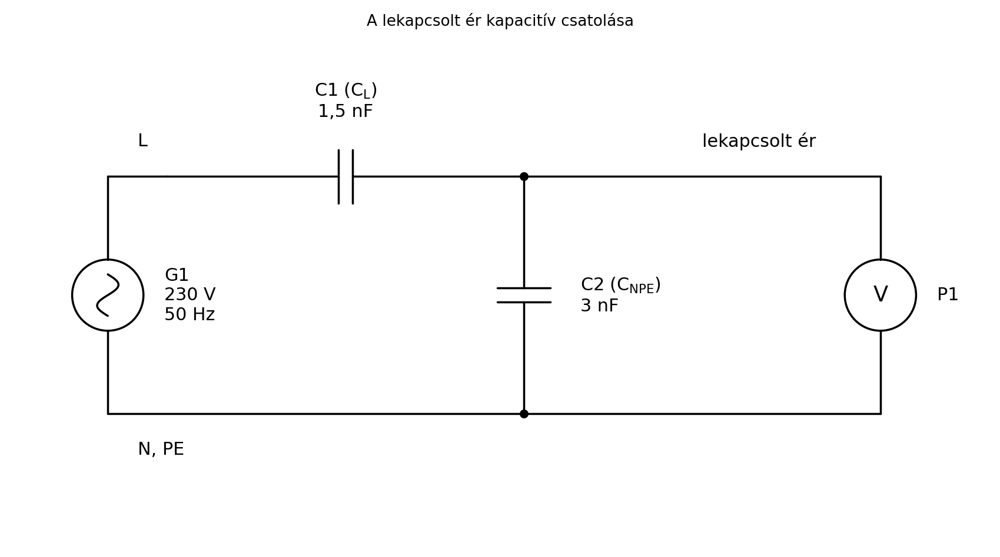

A karbantartó műhelyben azt látod, hogy egy mágneskapcsoló tekercsét
egyenfeszültségről mérve a kéziszered szerint 470 Ω
ellenállású. Az oktató egy próbapanelen, védett kivitelben sorba köt
vele egy izzót, és 230 V váltakozó feszültségre kapcsolja;
te csak megfigyeled. (Ezt a kísérletet te a feladatgyűjteménybeli (6.2)
gyakorlati útmutató szerint 24 V-on végezd el.) Az izzó
alig világít, a mágneskapcsoló pedig gyengén zümmög. Az Ohm-törvény
alapján ez meglepő: 470 Ω-on 230 V hatására
közel 0,5 A áramnak kellene folynia, ami bőven elég lenne
az izzóhoz. Miért viselkedik mégis másként a tekercs? Az a helyzet, hogy
a tekercs nemcsak ohmos ellenállással, hanem váltakozó áramú
ellenállással is rendelkezik, ami 50 Hz-en sokkal
nagyobb lehet, mint az egyenáramú ellenállás. Ezt a jelenséget kell
pontosan megismerned ahhoz, hogy a váltakozó áramú áramköröket –
világítási vezérléseket, motorfűtéseket, tápellátásokat – megértsd és
méretezni tudd.
Az első kapcsolásban egy ellenállás, a másodikban egy tekercs, a harmadikban egy kondenzátor kap feszültséget ugyanarról a váltakozó áramú forrásról. A fázisviszonyok összehasonlításához egy-egy kis körben megmérjük az áramot és a feszültséget.

A három áramkör abban tér el egymástól, hogy az áram mikor éri el a maximumát a feszültséghez képest. A jelenséget a legjobban fázorábrával lehet követni:

Az ábra három külön kört mutat, és mindháromban a feszültség a referencia: vízszintesen jobbra mutat (0°), ahogy a könyv minden fázorábráján. Az ellenállás árama fázisban van a feszültséggel, ezért ugyanabba az irányba mutat (a). Mivel a fázorok az óramutatóval ellentétesen forognak, a késő mennyiség az óramutató járásának irányában marad le: az induktivitás árama 90°-ot késik, ezért lefelé (−90°) mutat (b). A kapacitás árama 90°-ot siet, ezért felfelé (+90°) mutat (c). Az és az tehát merőleges a saját feszültségére.
A „késik” és a „siet” szó igazán az időfüggvényen látszik: melyik görbe éri el előbb a csúcsát. Az alábbi ábra soronként ugyanazt a három esetet mutatja, bal oldalon a feszültség és az áram, jobb oldalon a kettő szorzata, a pillanatnyi teljesítmény időfüggvényével.
Nézd meg először a bal oldali panelek csúcsait: ellenállásnál a
feszültség és az áram egyszerre, 5 ms-nál éri el a
maximumát; a tekercs árama 5 ms-mal (negyed periódussal,
90°-kal) később, a kondenzátoré 5 ms-mal
korábban. A jobb oldali
görbe kétszer olyan gyorsan leng, mint a feszültség, a frekvenciája
100 Hz. Ellenálláson sehol sem negatív, átlaga
(normáltan 0,5): ez a hővé alakuló hatásos teljesítmény. Tekercsen és
kondenzátoron negyedperiódusonként előjelet vált: amennyi energiát az
egyik negyedben a hálózatból felvesz (sraffozott terület), annyit a
következőben visszaad (pontozott terület), ezért az átlaga nulla, és az
elem nem melegszik – ez az energiacsere. Ebből lesz a meddőteljesítmény
a Teljesítmények és teljesítménytényező
alfejezetben. A HTML-kiadásban a fogyasztó típusa és a köztes (RL vagy
RC) fázisszög is állítható, az idő-kurzor pedig a forgó fázorok
vetületét a görbékhez köti.
Ha az ellenállásra szinuszos feszültséget kapcsolunk, az Ohm-törvény minden pillanatban érvényes:
Definíció. Az ohmos (hatásos) ellenállás olyan fogyasztó, amelyben a feszültség és az áram pillanatértéke minden időpillanatban egyenesen arányos, ezért a két mennyiség fázisban van egymással, a fázisszög . Az ohmos ellenálláson a váltakozó áramú teljesítmény hővé alakul.
Összefüggés. Az effektív értékekre is érvényes:
A reaktancia itt nulla, a feszültség és az áram vektora azonos irányba mutat. A gyakorlatban a fűtőszál, az izzószál, a termosztát beépített ellenállása, valamint a vezeték saját ohmos ellenállása ilyen jellegű. A tekercs és a kondenzátor ideális esetben nem ohmos fogyasztó, ezért viselkedésük eltér ettől.
Számítás. Egy hősugárzó fűtőszála
26,0 Ω-os. Hálózati feszültségen, 230 V-on
számítsuk ki az áramot.
Adott:
Keresett:
Képlet:
Behelyettesítve:
Ellenőrzés:
,
ami egy hősugárzó jellemző teljesítménye. ∎
A tekercsben az áram folyásakor mágneses tér épül fel. Ha az áram változik, a mágneses fluxus is változik, és a tekercsben önindukciós feszültség ébred, amely a változás ellen hat (Lenz-törvény). Váltakozó áramnál az áram folyamatosan változik, ezért a tekercs folyamatosan „ellenáll” a változásnak. Ez az ellenállás nem hőt termel, hanem mágneses térben tárolt energiát cserél a hálózattal.
Definíció. Az induktív reaktancia () a tekercs váltakozó áramú, frekvenciafüggő ellenállása, amelynek egysége az ohm:
Ahol az induktivitás (henry, H), a frekvencia (Hz), a körfrekvencia (rad/s).
Összefüggés. Az effektív értékekre:
A fáziseltérés induktív jellegű: az áram 90°-ot késik a feszültséghez képest (). A fizikai ok az, hogy a tekercs árama csak akkor tud növekedni, ha a feszültség már megelőzte. Először megjelenik a feszültség, és csak utána épül fel az áram. A hétköznapi szerelői emlékeztető: C I L: C-nél az I (áram) előre siet, L-nél az I (áram) hátra marad.
Gyakorlati megfigyelés. Ha a mágneskapcsoló
tekercsére 230 V váltakozó feszültséget kapcsolunk, a
tekercs impedanciája jóval nagyobb, mint az egyenáramú ellenállása. Ez
az oka, hogy az előző izzós kísérletben az izzó alig világított. Az izzó
elé kötött tekercs sorba kapcsolt
ellenállásként viselkedik, korlátozza az áramot.
Számítás. Egy szemléltető, nagy induktivitású
mágneskapcsoló-tekercs induktivitása 20 H. Számítsuk ki az
-t
50 Hz-en és az áramfelvételt, ha a tekercs ideálisnak
tekinthető és 230 V-ra kapcsoljuk.
Adott:
Keresett:
,
Képlet:
Behelyettesítve:
Az áram:
Ez , a kis és közepes váltakozó áramú mágneskapcsolók tartási teljesítményének nagyságrendje; a behúzási áram ennek többszöröse, és a tekercs impedanciája nyitott és behúzott armatúránál erősen eltér (légrés). (ellenőrizendő: gyártói adatlap) ∎
Számítás – behúzás és tartás. Számoljuk végig a motiváció tekercsét, most már az ohmos ellenállásával együtt. A tekercs impedanciája (ezt az összefüggést a következő alfejezet vezeti le). Szemléltető adatok: ; behúzott (zárt) horgonnyal ; elengedett (nyitott) horgonnyal a nagy légrés miatt csak ; , .
| Mennyiség | Zárt horgony | Nyitott horgony |
|---|---|---|
A behúzás pillanatában tehát az áram kb. 8-szorosa a tartási áramnak (katalógusokban jellemzően 6–10-szeres, ellenőrizendő: gyártói adatlap). Egyenáramú ohmmérővel viszont csak a látszik; ebből ered a tévképzet, hogy a tekercs -on közel -t vesz fel. ∎
Mi következik ebből a szerelésben?
A kondenzátor két, egymástól szigetelővel elválasztott vezető lemez. Egyenáramú körben a feltöltődés után nem folyik át rajta áram. Váltakozó feszültségen viszont folyamatosan hol az egyik, hol a másik irányba töltődik, és a töltőáram a csatlakozó vezetékekben folyik. A kondenzátor tehát váltakozó áramban vezet, de a vezetés mértéke a töltés-váltakozás sebességétől, vagyis a frekvenciától függ.
Definíció. A kapacitív reaktancia () a kondenzátor váltakozó áramú, frekvenciafüggő ellenállása, amelynek egysége az ohm:
Ahol a kapacitás (farad, F), a frekvencia (Hz).
Összefüggés. Az effektív értékekre:
A fáziseltérés kapacitív jellegű: az áram 90°-ot siet a feszültséghez képest (). Ennek oka, hogy előbb megindul a töltőáram, és csak ahogy a lemezek töltése felépül, növekszik a feszültség. Ezért a kondenzátornál az áram „előre szalad”.
Számítás. Egy fénycsővilágítási körben
4,7 µF-os fázisjavító kondenzátort 230 V-os,
50 Hz-es hálózatra kapcsolnak. Számítsuk ki a kapacitív
reaktanciát és a felvett áramot.
Adott:
Keresett:
,
Képlet:
Behelyettesítve:
Az áram:
Figyelem. A kondenzátor valóságos veszteségekkel is rendelkezik, és a hálózatról leválasztva életveszélyes töltést tárolhat. A kisméretű kondenzátort is kisütés (kisütő ellenállás, lekapcsolás) után szabad csak megfogni. ∎
Kondenzátort nemcsak alkatrészként találsz a hálózatban: bármely két, szigeteléssel elválasztott vezető kapacitást alkot. A lekapcsolt ér (például a kapcsolt fázis egy NYM-J kábelben, vagy egy közös csőben futó másik áramkör ere) kapacitással csatolódik a feszültség alatti fázisérhez, és kapacitással az N és PE erekhez. A két kapacitás kapacitív feszültségosztót alkot, a mérőműszer belső ellenállása pedig a -vel párhuzamosan kapcsolódik.

Számítás. , , , (szemléltető értékek).
A LoZ-műszer terhelése alatt a „feszültség” összeomlik: a forrás csak töredék milliampert tud adni, nem valódi tápfeszültség. Ugyanez a kb. azonban egy LED-meghajtó bemenetén elég lehet a derengéshez vagy villogáshoz, ha a kapcsolt ér hosszan fut egy állandó fázis mellett (például a váltókapcsolás összekötő erei mellett); hasonló derengést okozhat a jelzőfényes nyomógomb árama is (Lépcsőházi automata, impulzusrelé és időrelé alapkapcsolása). A LED-meghajtó bemenete azonban nem egyszerű ellenállás, ezért a rajta kialakuló feszültség ezzel a modellel nem számolható. ∎
Szabály. A feszültségmentességet kétpólusú feszültségvizsgálóval állapítjuk meg (MSZ EN 61243-3, ellenőrizendő: aktuális kiadás), amelynek kis bemeneti impedanciája a gyenge kapacitív csatolás feszültségét jellemzően leterheli (ellenőrizendő: a vizsgáló adatlapja). A nagy impedanciájú multiméter „fantomértéke” sem a feszültségmentességet, sem a veszélyt nem bizonyítja: kétség esetén meg kell keresni a forrást, és az eret addig feszültség alattinak kell tekinteni (Villamos munkavégzés biztonsága: az öt szabály és a munkaengedély, Multiméter, lakatfogó és mérési kategóriák).
Az és képlete jól mutatja a frekvenciafüggést. A tekercsnél minél nagyobb a frekvencia, annál gyorsabban változik az áram, annál nagyobb az önindukciós feszültség, tehát annál nagyobb a reaktancia. A kondenzátornál minél nagyobb a frekvencia, annál gyorsabban váltakozik a töltés, annál nagyobb a töltőáram, tehát annál kisebb a reaktancia.
Összefüggés. Az egyenesen arányos, az fordítottan arányos a frekvenciával.
A gyakorlatban ez az oka annak, hogy a tekercs és a kondenzátor
másként viselkedik a különböző felharmonikusokon. Egy kapcsolóüzemű
tápegység bemeneti szűrőjében a nagyfrekvenciás zavarokat
induktivitásokkal fojtják le, míg a nagyfrekvenciás jeleket
kondenzátorokkal vezetik el a föld felé. Ugyanaz az elem
50 Hz-en egészen más.
Számítás. Hasonlítsuk össze egy 0,3 H-s
tekercs és egy 10 µF-os kondenzátor reaktanciáját
50 Hz-en és 1 kHz-en.
A tekercsnél :
A kondenzátornál :
Látható, hogy a tekercs nagyfrekvencián szinte elzárja az utat, a kondenzátor pedig nagyfrekvencián szinte zárlatot jelent. ∎
Az alábbi ábra ugyanezt az összefüggést szemlélteti a frekvencia függvényében.
Az
görbe a frekvenciával egyenesen arányosan nő, az
görbe fordítottan arányosan csökken. A két görbe kb.
92 Hz-en metszi egymást
();
ez a soros LC-kör rezonanciafrekvenciája, lásd Impedancia, soros és párhuzamos RLC, rezonancia.
Ennél kisebb frekvencián a kondenzátor, nagyobbon a tekercs reaktanciája
nagyobb; 50 Hz-en
,
.
A táblázatba foglalt összefoglalás a szerelői munka során gyakran előforduló jelenségeket segít gyorsan felismerni.
| Elem | Reaktancia | Fázisszög | Áram a feszültséghez képest | Egyenáramon |
|---|---|---|---|---|
| fázisban | Ohm-törvény | |||
| késik | rövidzár (ideális tekercsben) | |||
| siet | szakadás (ideális kondenzátor) |
A táblázatban az fázisszöge azért pozitív, mert a feszültség előzi meg az áramot. A fázisszöge azért negatív, mert ott az áram előzi meg a feszültséget. A három elem együttes viselkedésével, az eredő impedanciával a következő alfejezetben foglalkozunk.
A három elem reaktanciáját és fázisviszonyát a következő alfejezet, az Impedancia, soros és párhuzamos RLC, rezonancia fogja összeépíteni. Ott az ellenállás, a tekercs és a kondenzátor soros és párhuzamos kapcsolásait vizsgáljuk, és kiszámítjuk az eredő váltakozó áramú ellenállást.
Továbbvitt eredmény. Egy ellenálláson a feszültség és az áram fázisban van. Egy induktivitáson az áram 90°-ot késik, . Egy kapacitáson az áram 90°-ot siet, . Az és frekvenciafüggő, ezért a váltakozó áramú áramkörök viselkedése nem számolható egyszerű egyenáramú ellenállásokkal.
Egy régi, induktív előtéttel (fojtótekerccsel) szerelt fénycső nem
világított. A szerelő kicserélte a fénycsövet és a gyújtót, de a lámpa
továbbra sem működött. A kismegszakító nem oldott le, tehát zárlat nem
volt. A multiméterrel megmérte a fojtótekercs egyenáramú ellenállását:
84 Ω-ot mutatott, ami elsőre jónak tűnt. A hibakeresés
közben azonban kiderült, hogy a fojtótekercs menetzárlatos: egy része
átütött, és bár az ohmos ellenállás alig változott, az induktivitása
drasztikusan lecsökkent. Váltakozó feszültségen a reaktanciája alacsony
lett, a fénycső nem kapott megfelelő előtétet. A tanulság: a tekercs
váltakozó áramú viselkedését nem az egyenáramú ellenállás, hanem az
és az
határozza meg. A hibás tekercset induktivitásmérővel vagy cserepróbával
lehet megbízhatóan ellenőrizni.
10 Ω ohmos és
20 Ω induktív reaktanciával rendelkezik, a váltakozó áramú
eredő nem 30 Ω, hanem az impedancia a
.
Ezt a hibát az Impedancia, soros és párhuzamos RLC,
rezonancia alfejezetben kerülhetjük el.50 Hz-en egy 4,7 µF-os kondenzátor még több
száz ohmos. A kapacitás értékét mindig számold át faradba, mielőtt
behelyettesíted az
képletbe.Gyakorlás: ennek az alfejezetnek a kidolgozott példái, gyakorlatai és megoldással ellátott feladatai az Összefoglaló feladatgyűjtemény villanyszerelő tanulóknak című kötet 6.2 szakaszában találhatók.
Az ideális ellenállás váltakozó áramú körben ohmos viselkedést mutat, a feszültség és az áram fázisban van egymással, . A tekercsben az önindukció miatt az áram 90°-ot késik a feszültséghez képest, és a reaktanciája . A kondenzátorban az áram 90°-ot siet a feszültséghez képest, és a reaktanciája . Az a frekvenciával egyenesen arányos, az fordítottan arányos. A gyakorlati szerelésben ezért a tekercs nagyfrekvencián fojt, a kondenzátor nagyfrekvencián átenged. A továbbvitt eredmények: a reaktancia és a fáziseltérés fogalmát a soros és párhuzamos RLC-körök, az impedancia és a rezonancia tárgyalásánál használjuk fel az Impedancia, soros és párhuzamos RLC, rezonancia alfejezetben. Az ottani számítások alapját ezek az és képletek, valamint a 90°-os fázistolások alkotják.